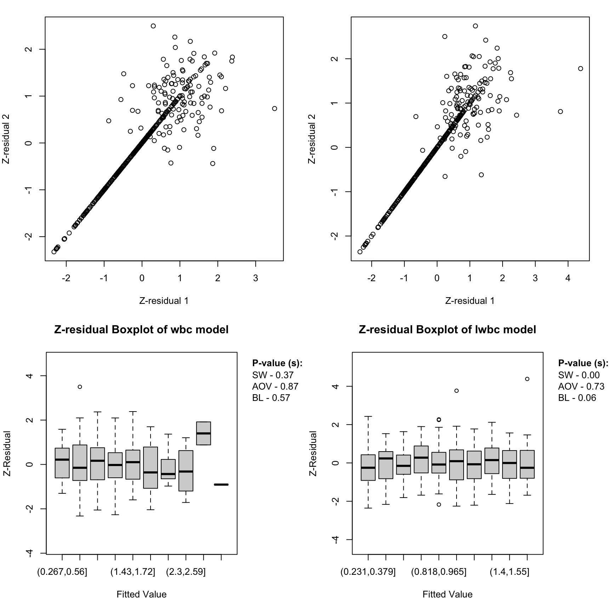

This vignette explains how to use the Zresidual package to calculate Z-residuals based on the output of the coxph function from the survival package in R. It also serves as a demonstration of how to use Z-residuals to assess the overall goodness of fit (GOF) and identify specific model misspecifications in semi-parametric shared frailty models. To fully understand the detailed definitions and the example data analysis results, please refer to the original paper titled “Z-residual diagnostics for detecting misspecification of the functional form of covariates for shared frailty models.
3 Definition of Z-residual
We use Z-residual to diagnose shared frailty models in a Cox proportional hazard setting with a baseline function unspecified. Suppose there are \(g\) groups of individuals, with each group containing \(n_i\) individuals, indexed as \(i\) = 1, 2, , \(g\) in the case of clustered failure survival data. Let \(y_{ij}\) be a possibly right-censored observation for the \(j\)th individual from the \(i\)th group, and \(\delta_{ij}\) be the indicator for being uncensored. The normalized randomized survival probabilities (RSPs) for \(y_{ij}\) in the shared frailty model is defined as: \[\begin{equation}
S_{ij}^{R}(y_{ij}, \delta_{ij}, U_{ij}) =
\left\{
\begin{array}{rl}
S_{ij}(y_{ij}), & \text{if $y_{ij}$ is uncensored, i.e., $\delta_{ij}=1$,}\\
U_{ij}\,S_{ij}(y_{ij}), & \text{if $y_{ij}$ is censored, i.e., $\delta_{ij}=0$,}
\end{array}
\right. \label{rsp}
\end{equation}\] where \(U_{ij}\) is a uniform random number on \((0, 1)\), and \(S_{ij}(\cdot)\) is the postulated survival function for \(t_{ij}\) given \(x_{ij}\). \(S_{ij}^{R}(y_{ij}, \delta_{ij}, U_{ij})\) is a random number between \(0\) and \(S_{ij}(y_{ij})\) when \(y_{ij}\) is censored. It is proved that the RSPs are uniformly distributed on \((0,1)\) given \(x_{i}\) under the true model . Therefore, the RSPs can be transformed into residuals with any desired distribution. We prefer to transform them with the normal quantile: \[\begin{equation}
r_{ij}^{Z}(y_{ij}, \delta_{ij}, U_{ij})=-\Phi^{-1} (S_{ij}^R(y_{ij}, \delta_{ij}, U_{ij})),\label{zresid}
\end{equation}\] which is normally distributed under the true model, so that we can conduct model diagnostics with Z-residuals for censored data in the same way as conducting model diagnostics for a normal regression model. There are a few advantages of transforming RSPs into Z-residuals. First, the diagnostics methods for checking normal regression are rich in the literature. Second, transforming RSPs into normal deviates facilitates the identification of extremely small and large RSPs. The frequency of such small RSPs may be too small to be highlighted by the plots of RSPs. However, the presence of such extreme SPs, even very few, is indicative of model misspecification. Normal transformation can highlight such extreme RSPs.
4 Examples for Illustration and Demonstration
4.1 Load the real Dataset
This example provides a fundamental illustration of using the Z-residuals for diagnosing both the overall goodness of fit (GOF) and the functional form of covariates in a real application for modelling the survival times of acute myeloid leukemia patients.
The dataset employed in our analysis contains 411 patients who were recorded at the M. D. Anderson Cancer Center between 1980 and 1996. These patients were under the age of 60 and hailed from 24 administrative districts. The data collected information on the survival time for acute myeloid leukemia and prognostic factors, including age, sex, white blood cell count (wbc) at diagnosis, and the townsend score (tpi) for which higher values indicate less affluent areas. The censoring rate is 29.2%. The response variable of interest is the survival time in days, which is the time from entry to the study or death. The preliminary study showed that the wbc is highly right-skewed. Logarithm transformation is often used to reduce the impact of extremely large values of the covariate on the response variable, such as the wbc variable in this application. However, a logarithm transformation may mask the impact of extremely large values of the covariate on the outcome variable.
We fitted two shared frailty models, one with covariates wbc, age, sex and tpi, which is labelled as the wbc model, and the other with log(wbc) replacing wbc, which is labelled as the lwbc model.
4.4 Inspecting the Normality of Z-Residuals for Checking Overall GOF
Diagnosing the overall goodness-of-fit (GOF) using Z-residuals as follows:
A QQ plot based on Z-residuals can be used to graphically assess the model’s overall GOF, and Shapiro-Wilk (SW) or Shapiro-Francia (SF) normality tests applied to Z-residuals can be used to numerically test the overall GOF of the model. We can see that the QQ plots of Z-residuals of these two models align well with the 45 \(^\circ\) diagonal line. The Z-SW tests also give large p-values for two models, where Z-SW is the test method that the normality of Z-residuals is tested with the SW test.
Animated QQ plots of Z-residuals.
The Z-residuals can be divided into \(k\) groups by cutting the linear predictors or covariates into equally-spaced intervals. Then we can check whether the Z-residuals of the \(k\) groups are homogeneously distributed. A quantitative method to assess the homogeneity of such grouped Z-residuals is to test the equality of group means or variances of the Z-residuals. We employ the F-test in ANOVA to assess the equality of means and Bartlett’s test to examine the equality of variances.
The scatterplots of Z-residuals against the linear predictor don’t exhibit visible trends; their LOWESS lines are very close to the horizontal line at 0; the boxplots of Z-residuals grouped by cutting linear predictors into equal-spaced intervals appear to have equal means and variance across groups. The Z-AOV and Z-BL for linear predictors tests also gives large p-values for the wbc and lwbc models, where Z-AOV and Z-BL are the methods of applying ANOVA and Bartlett to test the equality of the means and variances of Z-residuals against the groups formed with the linear predictor.
Code
for (i in1:10) {par(mfrow =c(2, 2), mar =c(4, 4, 1.5, 2))plot( Zresid.LeukSurv.wbc,x_axis_var="index",main.title ="Z-residual Scatterplot of wbc model",irep=i )plot( Zresid.LeukSurv.logwbc,x_axis_var="index",main.title ="Z-residual Scatterplot of lwbc model",irep=i )boxplot( Zresid.LeukSurv.wbc,x_axis_var ="lp",main.title ="Z-residual Boxplot of wbc model",irep=i )boxplot( Zresid.LeukSurv.logwbc,x_axis_var ="lp",main.title ="Z-residual Boxplot of lwbc model",irep=i )}

Figure 1: Figure 2: Scatter plots and box plots of Z-residuals against LP for the wbc (left panels) and lwbc (right panels) models fitted to the survival data of acute myeloid leukemia patients
Identifing specific model misspecifications using Z-residuals as follows:
The above diagnostics results reveal no serious misspecification in these two models. However, the inspection of the Z-residuals against the covariate wbc/log(wbc) reveals that the functional form of the lwbc model is likely misspecified. The scatterplots and comparative boxplots of the Z-residuals against wbc/log(wbc) are shown below. The LOWESS curve of the wbc model appears to align well with the horizontal line at 0 and the grouped Z-residuals of the wbc model appear to have equal means and variances across groups. However, the diagnosis results for the lwbc model are very different. It appears that there is a non-linear trend in the LOWESS curve of the lwbc model and the grouped Z-residuals appear to have different means across groups. The Z-AOV and Z-BL for covariate wbc and log(wbc) also gives p-values for the wbc and lwbc models as shown in the boxplots. The very small p-value of the Z-AOV for covariate log(wbc) test for the lwbc models strongly suggests that the log transformation of wbc is likely inappropriate for modelling the survival time.
Code
for (i in1:10) {par(mfrow =c(2, 2), mar =c(4, 4, 1.5, 2))plot( Zresid.LeukSurv.wbc,x_axis_var ="wbc",main.title ="Z-residual Scatterplot of wbc model",irep=i )plot( Zresid.LeukSurv.logwbc,x_axis_var ="logwbc",main.title ="Z-residual Scatterplot of lwbc model",irep=i )boxplot( Zresid.LeukSurv.wbc,x_axis_var ="wbc",main.title ="Z-residual Boxplot of wbc model",irep=i )boxplot( Zresid.LeukSurv.logwbc,x_axis_var ="logwbc",main.title ="Z-residual Boxplot of lwbc model",irep=i )}
Figure 2: Figure 3: Scatter plots and box plots of Z-residuals against covariate (wbc) for the wbc (left panels) and lwbc (right panels) models fitted to the survival data of acute myeloid leukemia patients
The boxplots of the Z-residuals against categorical covariate sex shows the grouped Z-residuals appear to have equal means and variances across groups. The p-values of Z-AOV and Z-BL are greater than 0.05.
4.5 Diagnostic Tests with Z-residuals
The Shapiro-Wilk (SW) or Shapiro-Francia (SF) normality tests applied to Z-residuals can be used to numerically test the overall GOF of the model. Moreover, the Shapiro-Franciard (SF) test can be employed to assess the normality of censored data. The diagnosis of the GOF of survival probabilities can be converted into a diagnosis of the normality of the censored Z-residuals. Thus, by utilizing the gofTestCensored function from the R package EnvStats, one can examine the normality of censored Z-residuals.
The Z-residuals can be divided into \(k\) groups by cutting the covariates or linear predictors into equally-spaced intervals. To quantitatively evaluate the homogeneity of grouped Z-residuals, we propose testing the equality of group means and group variances. For this purpose, we employ the F-test in ANOVA to assess the equality of means and Bartlett’s test to examine the equality of variances.
The histograms of 1000 replicated Z-residual test p-values for the wbc and lwbc models. The red vertical lines in these histograms show the upper bound summaries of these replicated p-values, \(p_{min}\). These histograms show that the Z-SW, Z-SF, and Z-AOV with LP tests for both models give a large proportion of p-values greater than 0.05, and the large p-values result in large \(p_{min}\) values. In contrast, the replicated Z-AOV with log(wbc) p-values for the lwbc model are almost all smaller than 0.001. The consistently small Z-AOV with log(wbc) p-values further confirm that the log transformation of wbc is inappropriate for modelling the survival time.
Summary of Minimum P-values
Diagnostic test results for LeukSurv models
Statistical Test
WBC Model
Log-WBC Model
Min P-value
Min P-value
Shapiro-Wilk
0.4964
0.5793
Shapiro-Francia
0.6920
0.7133
ANOVA (lp)
0.9908
0.9749
ANOVA (Variable)
7.87 × 10−1
2.54 × 10−5
Code
par(mfrow =c(4, 2), mar =c(4, 4, 2, 2))hist( sw.wbc,main ="Replicated Z-SW P-values for wbc Model",breaks =20,xlab ="Z-SW P-values for wbc Model")abline(v = pmin.sw.LeukSurv.wbc, col ="red")hist( sw.lwbc,main ="Replicated Z-SW P-values for lwbc Model",breaks =20,xlab ="Z-SW P-values for lwbc Model")abline(v = pmin.sw.LeukSurv.lwbc, col ="red")hist( sf.wbc,main ="Replicated Z-SF P-values for wbc Model",breaks =20,xlab ="Z-SF P-values for wbc Model")abline(v = pmin.sf.LeukSurv.wbc, col ="red")hist( sf.lwbc,main ="Replicated Z-SF P-values for lwbc Model",breaks =20,xlab ="Z-SF P-values for lwbc Model")abline(v = pmin.sf.LeukSurv.lwbc, col ="red")hist( aov.wbc.lp,main ="Replicated Z-AOV with LP P-values for wbc Model",breaks =20,xlab ="Z-AOV with LP P-values for wbc Model")abline(v = pmin.aov.lp.LeukSurv.wbc, col ="red")hist( aov.lwbc.lp,main ="Replicated Z-AOV with LP P-values for lwbc Model",breaks =20,xlab ="Z-AOV with LP P-values for lwbc Model")abline(v = pmin.aov.lp.LeukSurv.lwbc, col ="red")hist( aov.wbc,main ="Replicated Z-AOV with wbc P-values for wbc Model",breaks =20,xlab ="Z-AOV with wbc P-values for wbc Model")abline(v = pmin.aov.wbc.LeukSurv, col ="red")hist( aov.lwbc,main ="Replicated Z-AOV with wbc P-values for wbc Model",breaks =20,xlab ="Z-AOV with wbc P-values for lwbc Model")abline(v = pmin.aov.lwbc.LeukSurv, col ="red")
Figure 3: Figure 5: The histograms of 1000 replicated Z-SW, Z-SF, Z-AOV-LP and Z-AOV-log(wbc) p-values for the wbc model (left panels) and the lwbc model (right panels) fitted with the survival times of acute myeloid leukemia patients. The vertical red lines indicate \(p_{min}\) for 1000 replicated p-values. Note that the upper limit of the x-axis for Z-AOV-log(wbc) p-values for the lwbc model is 0.005, not 1 for others.
5 Other residual calculation
5.1 censored Z-residuals
The normality of censored Z-residuals is tested by an extended SF method for censored observations, which is implemented with gofTestCensored in the R package EnvStats.
The overall GOF tests and graphical checking with Cox-Snell residuals show that both the wbc and lwbc models provide adequate fits to the dataset. The estimated CHFs of the CS residuals of both of the wbc and lwbc models align closely along the \(45^{\circ}\) diagonal line.
##unmodified CS residualspar(mfrow =c(1, 2), mar =c(4, 4, 3, 2))plot.cs.residual(ucs.LeukSurv.wbc,main.title ="CS Residuals of wbc model")plot.cs.residual(ucs.LeukSurv.logwbc,main.title ="CS Residuals of lwbc model")
5.3 Martingale residual
The martingale residuals are mostly within the interval (-3, 1) for those two models. In the scatterplots of martingale residuals under the wbc model, the LOWESS curves have a slight upward slope on the left, while under the lwbc model, they display a pronounced downward curve. Both of these lines demonstrate noticeable non-horizontal trends.
par(mfrow =c(1,2))plot.martg.resid(martg.LeukSurv.wbc,x_axis_var="wbc",main.title ="Martingale Residuals of wbc Model")plot.martg.resid(martg.LeukSurv.logwbc,x_axis_var="logwbc",main.title ="Martingale Residuals of lwbc Model")
5.4 Deviance residual
The deviance residuals are more symmetrically distributed than martingale residuals and they are mostly within the interval (-3, 3). In both models, the scatterplots of deviance residuals exhibit strikingly non-horizontal trends in their LOWESS curves.